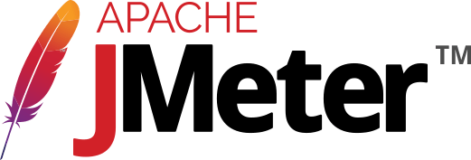

From January 2023 to August 2023, I had the opportunity to work at D2L!
Specifically, I worked on a subsidiary of the Foundation team, called team "Squidward". Throughout these 8
months, I learned a lot about software engineering, including low level development that effects all other
developers at the company. This position was remote, so I had the opportunity to work from home. Our team
hosted a few events at the downtown Toronto office, where I had the opportunity to meet the rest of the team!
About D2L
D2L's main product is called Brightspace. It's used at many school boards and educational institutions around
the world. A small list of their clients include Purdue, University of Arizona, eLearning Ontario, McMaster
University, Western University, and the University of Guelph!. D2L's headquarters are in Waterloo, Ontario and
they have satellite offices all over the world, including Toronto, Vancouver, London, Melbourne, among others.
D2L is a large company with over 1000 employees!
At a high-level, D2L is a SaaS company. They provide a custom learning platform to not only schools, but also
businesses. The platform is used to create and deliver content, track student progress, and more. The platform
is used by millions of users around the world.
Job Description
Team Squidward worked on core APIs that lay the foundation of Brightspace. These APIs are used by all other
teams at D2L. We worked primarily in C# using a slightly modified version of .NET Framework.
When I joined D2L in January, the team's focus (and focus for the last few years) was migrating the version of
.NET to a newer, more modern version, as well as improving the codebase overall. This was a large undertaking
as the codebase is quite large and has been around for many years. There are also many instances of unsafe
code, which cannot be directly migrated. This means that the code must be rewritten in a safe way. This is a
large undertaking as it requires a lot of planning and testing.
A large focus during my first 4 months was strategizing this migration. An integral component is the YARP
proxy. The proxy will allow D2L developers to support and develop the to-be legacy codebase, while being able
to incrementally move functionality to the new platform.
Below, I list some significant changes that benefitted me as a developer, further expanding my skill set.
Proxy Latency Investigation
When we were deciding if using the YARP proxy would be a good choice, we needed some concrete figures to weigh
against other options. I was able to subtly simulate load on an Brightspace instance behind a proxy by
configuring a basic JMeter stress test. The traces produced by the test were aggregated and summarized to
compare the overall latency incurred from adding the YARP proxy. After working on these numbers, I shifted
towards focusing on a more permanent solution allowing us to keep track of the overhead in real-time!

Apache JMeter logo
OpenTelemetry Instrumentation
I added the OpenTelemetry .NET library to the new proxy server, which allows us to easily collect various
telemetry, including tracing, metrics, and logging. To hit the ground running, we decided to export process
level measurements within proxy server. These metrics are pushed to AWS Timestream via Telegraf. I also wrote
a custom exporter within OpenTelemetry, allowing us to push these metrics to Telegraf.
Telegraf logoAWS Timestream logo
Pinned Attribute
Due to a defect related to dangerous serialization that was discovered when extracting libraries, we had to be
careful about which types we moved over.
Since serialized data contains indispensable type information, we couldn't just move everything we came
across. Some types can't be moved at all!
I created a "Pinned" attribute, which includes a Roslyn analyzer, forcing pinned types to stay where they are.
Roslyn logo
Eliminating dynamic assembly loading
What is it?
Dynamic assembly loading or DAL is the process of loading external assemblies (and the types within them) into
the current application domain. Allows the developer access to types that are otherwise inaccessible within
the current domain.
The problem
While DAL is incredibly powerful to the developer, it comes with some trade-offs that threaten the possibility
of migration to modern .NET.
DAL is heavily relied upon for de/serialization.
Serialized data contains critical type info required to deserialize it.
Serialized data can persist for a significant amount of time (in the DB)
If a type were to move (for example, in the process of a migration), the runtime will fail to
deserialize the data.
DAL in Assigned Activities
While there were a handful of DAL eliminating initiatives that I worked on this summer, Assigned Activities
was a significant hurdle and milestone for myself.
Assigned Activities publishes a handful of tasks to Amazon SQS, which are queued to be handled asynchronously
at a later time.
When ready to process the task, we deserialize the data from SQS. This contains type name information which is
parsed with Type.GetType()
We decided to assign each task a unique GUID which will identify the type instead. If one of these tasks were
to move location, now the SQS processor would still be able to locate the type. This had to be released
incrementally, due to blue-green deployment rules!
AWS SQS logo
Goals and Outcomes
Work Term Learning Goals
Technological Literacy Goal: I want to learn about modern .NET Core and the intricacies of planning
migrations and migrating legacy code (particularly by working on this directly). I plan on achieving this by
working with my manager to find a project that will allow me to work with modern .NET Core and by
contributing to the migration of the legacy codebase.
Goal Reflection: Overall, I was able to achieve this goal. I was able to work with modern .NET
Core and contribute to the migration of the legacy codebase. I was able to work on a project that
involved migrating legacy code to modern .NET Core. I was able to work with my manager to find a project
(YARP proxy) that would allow me to work with modern .NET Core!
Technological Literacy Goal: I want to learn more about SQL Server and the differences between that
and alternatives (MySQL, PostgreSQL, etc.).
Goal Reflection: There was not much opportunity to work with SQL Server. Our team's focus was
more about the core APIs, which did not necessarily interact with the database (higher level).
Therefore, I would not say that I achieved this goal.
Personal Goal: I want to learn more about CI/CD particularly in the realm of dev/QA/production
deployments (including feature flags, db migrations, rollbacks, etc.) specifically involving our team and
how a large-scale migration to .NET Core might affect this.
Goal Reflection: This goal was a success! I learned and implemented a feature flag for a new
feature. I also learned a lot about blue/green deployment methodology which is used at D2L.
Problem Solving Goal: I want to learn more about planning and coordinating medium/large scale
projects at a lower level (ie. taking the lead).
Goal Reflection: I was able to achieve this goal. I was able to take the lead on implementing an
observability solution for the YARP proxy. I was able to work with my manager to plan and coordinate
this project.
Conclusion
All-in-all, this work term was a great learning experience. I was able to work on a large project that had a
large impact on the company. I was able to work with a team of talented individuals and learn a lot from them.
I was able to work with modern .NET Core and learn about the intricacies of migrating legacy code. This term
has been and will be a great stepping stone for my future career. I am excited to see what the future holds!
Acknowledgements
I would like to thank my manager Adnan for allowing me back for the summer and mentoring me throughout my time
at D2L. Additionally, the help and support from every person on my team was immensely constructive to my
technical skills and soft skills! I would love to return to D2L in the future!